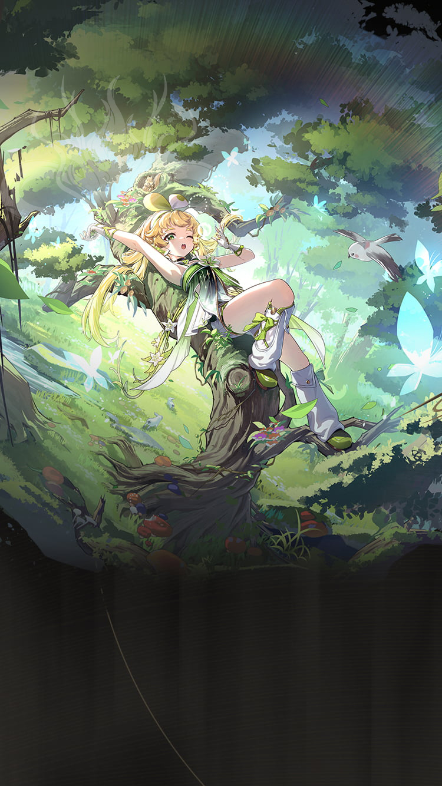

Wuthering Waves Resonator guide
Verina build, teams, weapons, and Echoes
Very forgiving healer and universal support.
Personal notes
Optional profile-aware info that keeps the main guide unchanged.
No profile connected on this browser yet.
Log in above to load an existing WaveKit profile, or use the team helper to mark your Resonators and weapons for Verina.
Skill priority
Team compositions
Use the helper to match Verina with your owned Resonators, then prioritise role coverage and a comfortable sustain slot.
Good for players who do not want to force a team they cannot actually build yet.
New player reading guide
If you are only checking Verina before building a profile, start by confirming their role, weapon type, Sonata, and whether they need a real healer or a specific helper.
Verina guide overview
Verina is a Spectro healer support in Wuthering Waves. This WaveKit guide focuses on the practical build choices most players need first: weapon options, Sonata and Echo setup, stat priority, simple rotation notes, and team shells that make sense for real accounts.
Quick build
- Role
- Healer support
- Team type
- atk, sustain
- Best weapon
- Stellar Symphony
- Alternate weapons
- Variation / Rectifier#25 / Comet Flare
- Sonata
- Rejuvenating Glow
- Echo cost
- 4-3-3-1-1
- Main Echo
- Fallacy of No Return
- Main stats
- Healing Bonus or ATK% / Energy Regen / ATK%
Stat priority
- Priority 1: Energy Regen until Liberation is ready every rotation
- Priority 2: ATK% for healing scaling
- Priority 3: Flat ATK
- Priority 4: Defensive HP% or DEF%
Team direction
Verina is best handled by matching their role with the teammates you actually own.
WaveKit treats Verina as flexible. Use the team helper to match them with your owned roster instead of forcing one fixed team.
Useful teammates
No fixed teammate pool is required. Prioritise role coverage, safe sustain, and matching build needs.
Simple play pattern
- Build enough Energy Regen so Verina can heal before panic moments.
- Use support/healing setup first, then leave field time for the damage dealer.
- Prioritise consistency over perfect damage if you are still learning fights.
Build priority
- Difficulty
- Low stress
- Safety
- Real sustain
- Data note
- Guide checked
Verina is worth building for account comfort because sustain units make more teams easier to play.
Verina FAQ
What is the best Verina build in Wuthering Waves?
Verina's recommended WaveKit setup is Full Support Build, using Stellar Symphony, Rejuvenating Glow, and Fallacy of No Return as the main Echo target.
What stats should Verina use?
Start with Healing Bonus or ATK% / Energy Regen / ATK%. If the rotation feels uncomfortable, improve Energy Regen or defensive comfort before chasing perfect substats.
What teams work with Verina?
Verina is flexible, so the best team depends on the Resonators and weapons you own.
Is Verina beginner friendly?
Verina's current difficulty is listed as Low stress. If you are learning, pair them with safer sustain or defensive support.